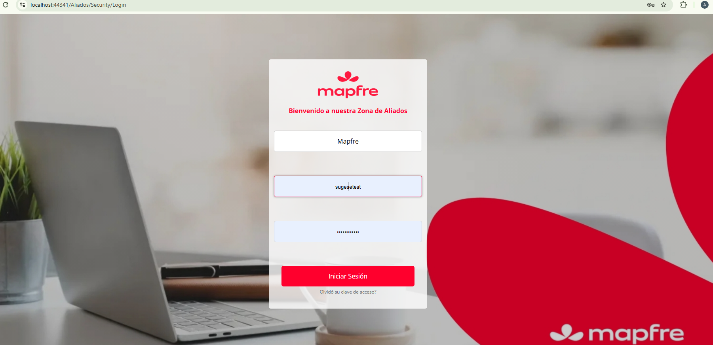
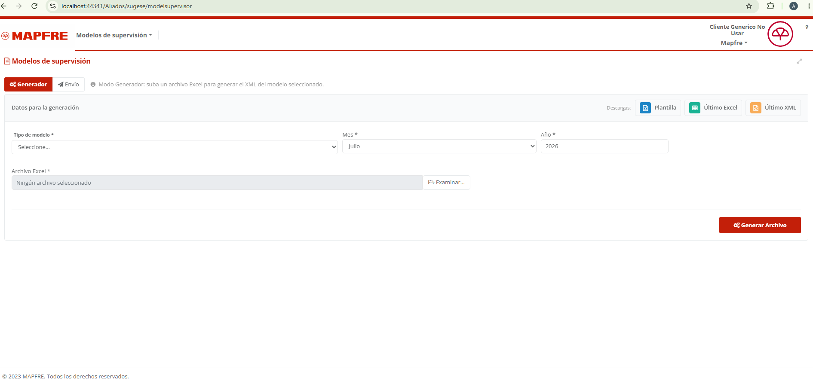
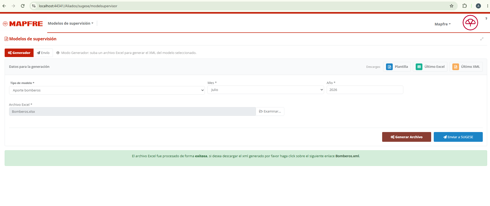
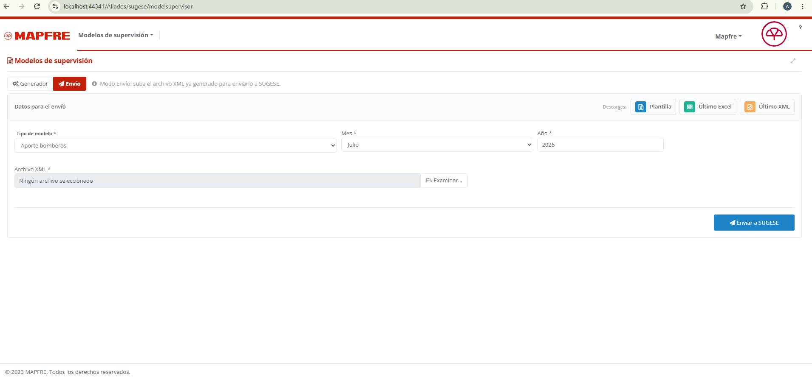
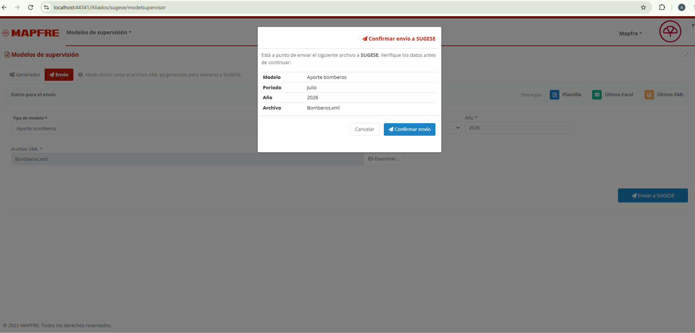

| Campo | Valor |
|---|---|
| Compañía | Mapfre |
| Usuario | sugesetest |
| Clave | Sugesetest@1 |

En el menú, ingrese a Modelos de supervisión.
Arriba encontrará un selector con dos opciones:
| Modo | Cuándo usarlo |
|---|---|
| Generador | Tiene el Excel y necesita generar el XML del modelo. |
| Envío | Ya tiene el XML y solo necesita enviarlo a SUGESE. |
En el modo Generador, la pantalla toma el archivo Excel del modelo, lo procesa y genera el archivo XML correspondiente, validando la información. En la parte superior el selector queda marcado en Generador y, debajo, se muestran los campos de modelo, periodo, año y la carga del archivo, junto con la barra de descargas.
Si es correcto, verá un mensaje de éxito con el enlace para descargar el XML. Si hubo observaciones de validación, se le indicará y podrá descargar el Excel con el detalle de las fallas encontradas.

Cuando la generación finaliza correctamente, aparece un mensaje de éxito con un enlace del archivo XML. Al hacer clic en el enlace, el archivo XML se descarga directamente en su equipo (no se abre en una pestaña nueva). Además, en ese momento se habilita el botón Enviar a SUGESE, de modo que puede transmitir el archivo recién generado sin salir de la pantalla.

En el modo Envío, la pantalla toma un archivo XML ya generado y lo transmite al webservice de SUGESE. Al elegir este modo, el selector superior queda marcado en Envío y el campo de archivo cambia para solicitar un XML (en lugar del Excel). Los campos de modelo, periodo y año siguen disponibles, así como la barra de descargas.

El sistema le informará si el envío fue exitoso o si ocurrió algún problema.
Antes de transmitir, se abre la ventana Confirmar envío a SUGESE con un resumen de lo que se enviará, para verificar los datos antes de continuar:
Presione Confirmar envío para transmitir, o Cancelar para cerrar sin enviar.

Las descargas se guardan directamente en su equipo.